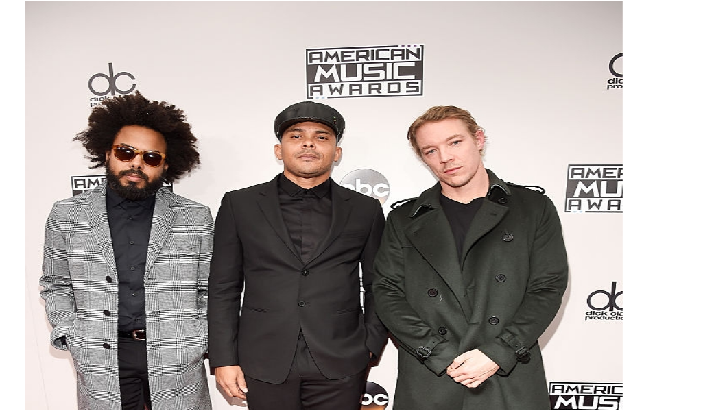
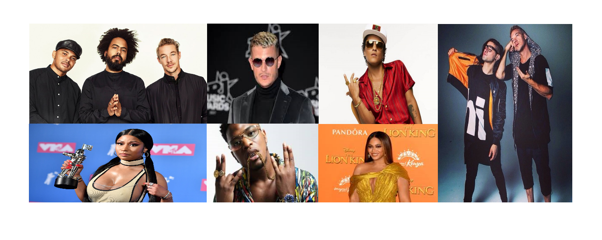

Qui est ce ?

Durant sa carrière d’artiste, Diplo a eu l’occasion de collaborer avec une multitude d’artistes. Cependant, il n’a pas fait que collaborer avec ces derniers, il est même allé jusqu’à créer des groupes avec eux.
En effet, en 2008 il forme le groupe Major Lazer avec le DJ britannique Switch. A partir de là, ils commencent à produire des musiques ensembles. En 2011, les DJ, Walshy Fire et Jillionaire rejoignent le groupe. De plus, ils commencent à devenir de plus en plus connus à l’aide de leurs collaborations avec des artistes célèbres tel que Pharell Williams et Snoop Dog. Mais, c’est surtout grâce à la sortie de leur titre « Lean On » en collaboration avec DJ Snake, que ce groupe se classe premier des tops dans plusieurs villes du monde et devient l’un des groupes le plus connu et écouté au monde.
Jack Ü
Jack Ü est un groupe de musique formé par le célèbre DJ Diplo et Skrillex en 2013, lors d’une tournée d’un des projets de Diplo, Mad Decent. C’est durant un festival qu’ils annoncent leur collaboration dans ce projet et ainsi la création de ce duo. Tous deux affirment avoir toujours été proches musicalement ce qui explique leur initiative de créer Jack Ü.
Ils vont commencer par écrire des chansons seuls puis petits à petits ils collaboreront avec des artistes connus ce qui les fera gagner en notoriété. En effet, un an plus tard ils se retrouvent en tête d’affiche du fameux Madison Square Garden qui ne cesse d’accueillir les plus grands artistes.
Collaborations importantes pour sa carrière

Durant sa carrière de producteur, Diplo a fait la rencontre d’une multitude d’artistes et ces derniers ont joué un rôle important dans la mise en avant de ses musiques. En effet, M.I.A, une chanteuse anglaise a collaboré avec lui et lui a par la suite présenté le DJ britannique Switch ce qui a ensuite mené à la création de leur groupe Major Lazer (dont je parle dans un autre article). Grâce à elle, Diplo a donc beaucoup gagné en notoriété.
De plus, la sortie d’un album en collaboration avec la célèbre chanteuse Sia et le chanteur britannique Labyrinth a suscité beaucoup de réactions de la part de ses fans. Celui-ci avait publié sur les réseaux sociaux une photo de la couverture de l’album ce qui a intrigué ses fans et a créé une forme d’impatience et d’excitation par rapport à la date de sa sortie.
On peut donc en conclure que chacune des collaborations de Diplo suscite beaucoup de réactions de la part des personnes qui l’écoutent et le découvrent. Grâce à son mélange de styles musicaux il arrive à attirer un public très grand et diversifié.